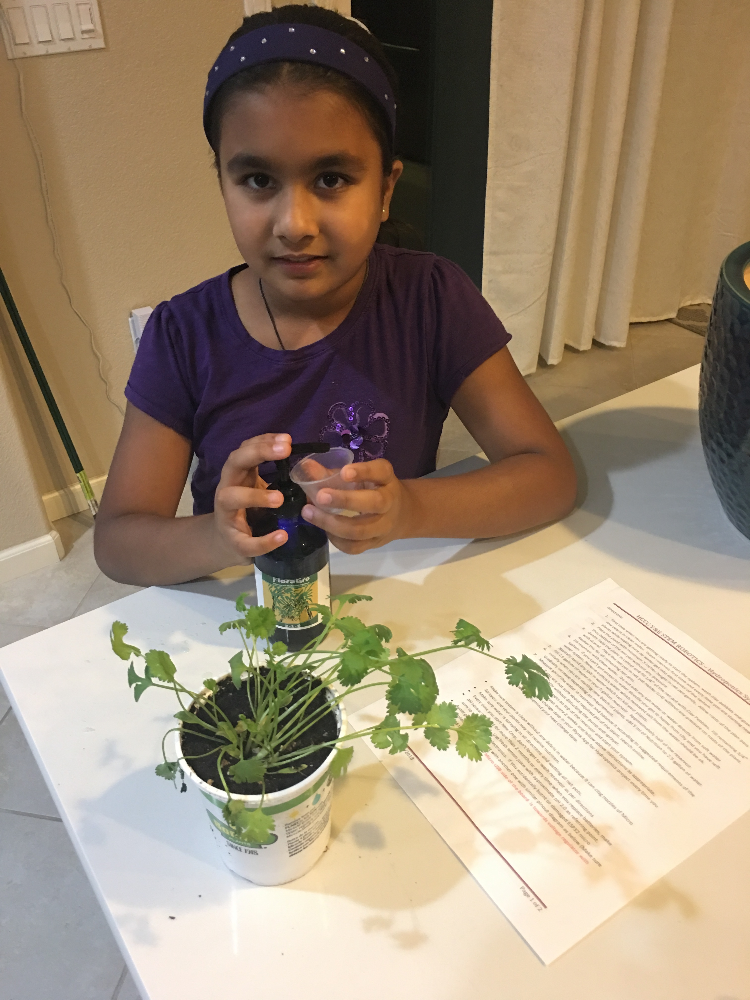
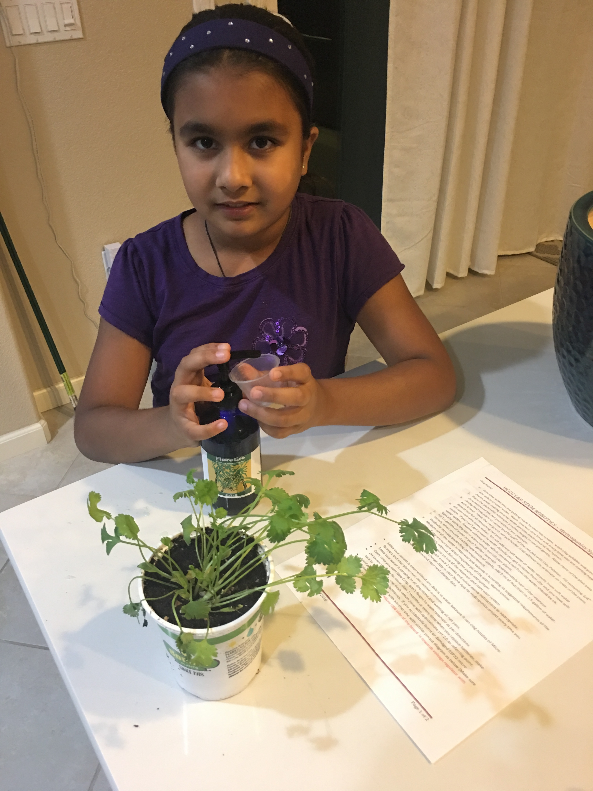
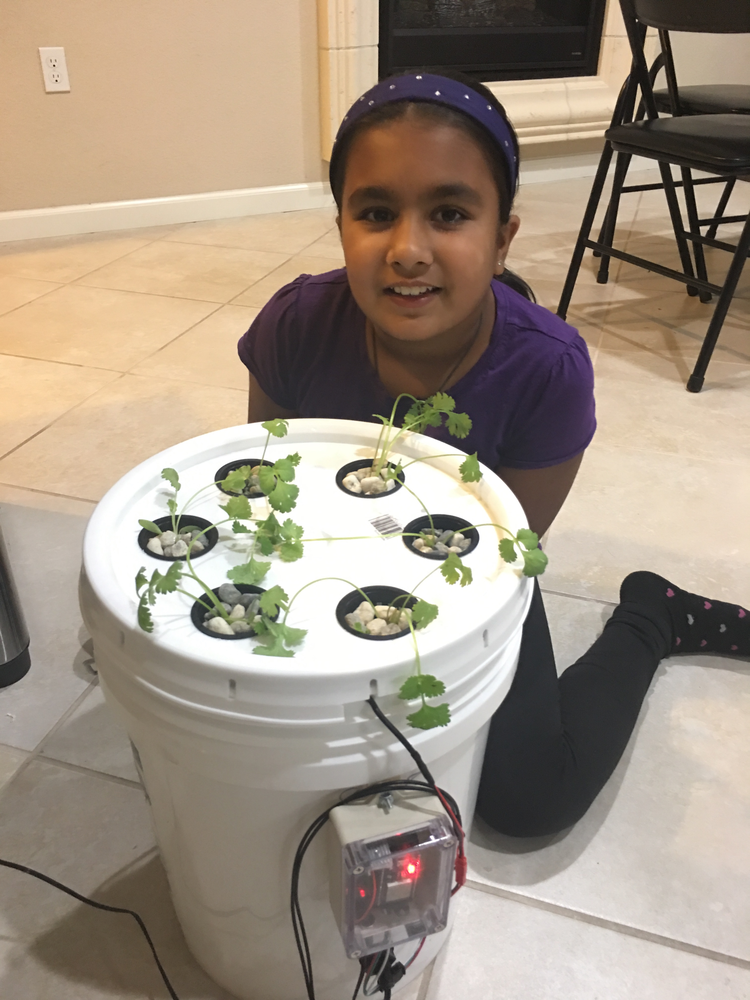
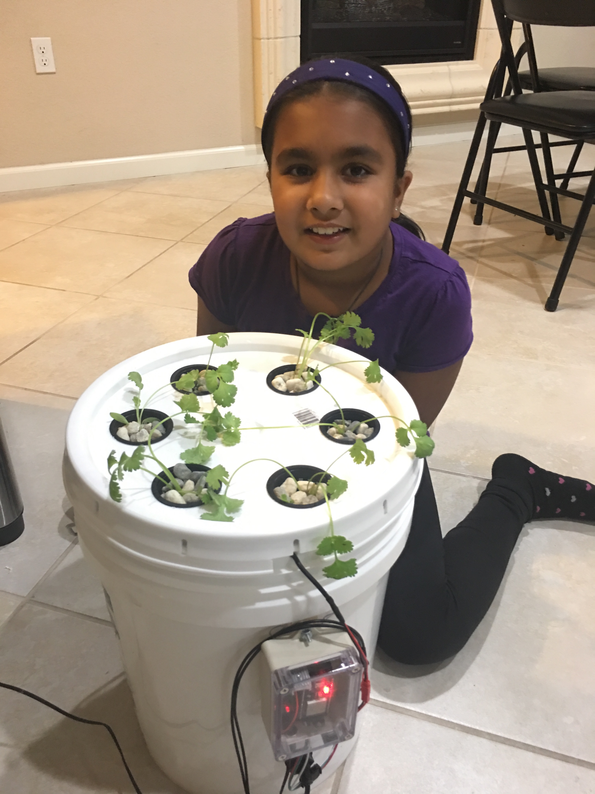

In my school the science fair s going on. In the science fair you make a project and you enter it school wide.
In fifth grade it's mandatory to have a project. Here are pics of my project.


 

 

I will show you what I wrote on my baord. This is what I wrote ......
Hydroponics is the science of growing plants in clay pebbles, rocks, and water without using soil.
This technique uses nutrients and water to the plant’s roots so that the plant gets its food and nutrition.
Since, plants use a lot of energy growing roots, they can search for the water and nutrients in the soil to
survive.
By providing constant available nutrition, hydroponics allow plants to grow up to 50% faster than they do in
soil.
Can we increase nutrient levels in plants? The problem is soil can provide limited nutrients to the plants.
You can enhance a plant’s nutrient level by simply adding nutrients to the solution they are grown in.
You can also add minerals like calcium, magnesium or any other mineral of your choice.
The reason I am doing hydroponics is because I want to see how plants grow without soil.
I also want to see the similarities and differences between plants grown in soil and in hydroponic system.
Will this plant tastes better than the plant that grew in soil?
I think the plant grown hydroponically will grow taller than the plant that grew in soil. I also think
Hydroponic plant will taste better.
My hypothesis was right, the hydroponic plant grew taller than the plant grew in soil it also tastes better.
I have also learned in the hydroponics method, plants are raised in perfectly pH balanced growing medium.
So, they need minimum energy to acquire nutrients from the roots.
Thus, energy saved by the root is better spent on fruit and flower production.
Does every plant perform well in the hydroponic system? To know this answer I carried out an experiment and
planted cilantro in our newly
developed hydroponic system.
To compare their growth we planted them on soil as well. The growth of cilantro was faster in the
hydroponic
system in comparison to soil.
A plant with roots in soil has to work hard to extract its nutrition from the soil, and it can waste a lot
of
energy doing that.
But a plant in nutrient-rich water can spend its energy growing bigger leaves, fruits, and flowers in a
shorter
amount of time.
Many of the fresh fruits and vegetables you buy in the store are grown hydroponically, especially during the
winter months or in colder climates.
A balanced pH level is important for the healthy growth of a plant. Without a balanced pH, the plant cannot
absorb nutrients easily.
pH value is a scale of 0-14. 7 is neutral, below 7 is acid, above 7 is Alkaline (Base).
Most plants prefer a pH between 5.0 and 7.5.Cilantro will grow in a relatively wide pH range between 6.1
and
7.8.
We are using ESP32 board that has lots of new and cool features.
It connects to the WIFI and bluetooth wireless. To use this board in our Hydroponics system we need to go to
Arduino( an open source platform
used for building electronic projects) and put our auth token, wifi password, and ssid(network name) in.
Then we need to download libraries such as adafruit unified sensor, WIFI built-in, Blynk, DHT sensor
library,
and time.
result is that the average height of cilantro grown in hydroponic system is 7 cm tall and the one grown in soil
is 6 cm.
So I conclude, Hydroponics is better than soil and plant grown hydroponically also tastes better.